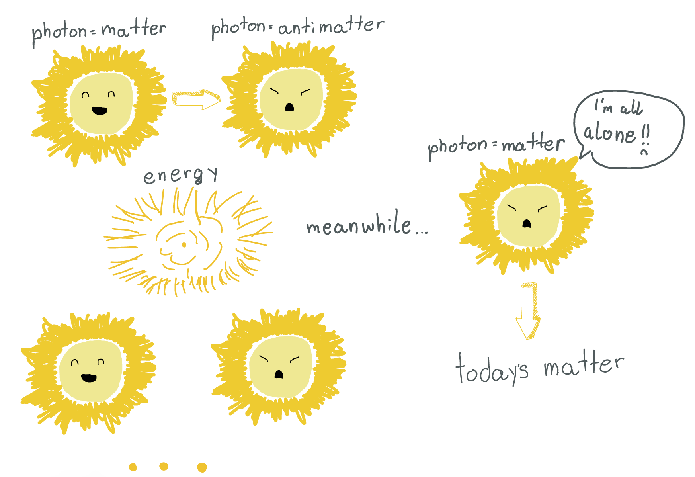
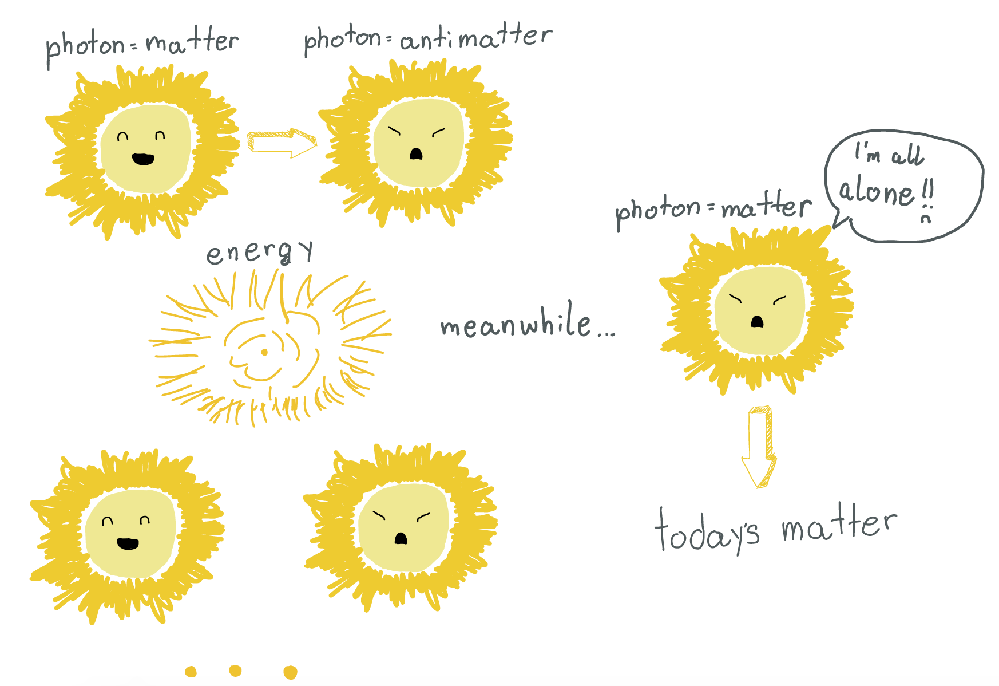

How did the universe begin?
Where did all the matter and energy come from?
These are the basic questions about the universe.
So what are the answers to these questions?
Do we even know?
Actually, we do. And the theory with which we describe this event is called The Big Bang Theory.
It’s called the Big Bang because it all started with a BANG.
But how?
Once, 13.7 billion years ago there was a small dot, a millionth of a period at the end of a sentence, that contained all the matter (material, everything you see) and energy in the whole universe! It was extremely hot and dense(for example, honey is denser than water because it is thicker and heavier).
And then it exploded.
KAAABBBOOOOOOOOMMMMMM.
Into an amazing explosion.
- As soon as it exploded there was the “Planck era” (this era didn’t last very long) which was named after the German scientist Max Planck
- Four main forces came to be: Gravity - binding bulk matter
- weak force - controlling radioactive decay
- strong force - binding atomic nuclei
- electromagnetic force - binding molecules
...a trillionth of a second after...
- There were two particles at that time: quarks and leptons. Quarks are never alone.They always have another quark nearby. And if you want to separate two quarks they would just stretch until they break, but now each has another pair!(That’s because when you pull them apart you create energy enough for another pair.Or E=mc^2.)
- Leptons though, are loners.They never have a pair. They just push other leptons away. The best known lepton is an electron.
- Also the cosmos was full of energy and it was contained in little wave packets of light energy called photons.
- But these particles routinely kept converting into matter-antimatter particles ( antimatter particles are particles completely opposite from the other particle ) and then they would collide back into photons. Rarely, about one in a billion, didn’t find their antimatter particle friend so they stay just matter, and thanks to these today we have matter because otherwise there would be nothing in the universe.
- The universe was about the size of our solar system and it was below a trillion degrees Kelvin(A unit of temperature in astronomy)
 

…a millionth of a second after…
- The universe was not hot enough to cook quarks and leptons so quarks grabbed their dance partners to create heavier particles such as protons and neutrons.
…a second after…
- The universe has grown a few light-years across and the temperature was a billion degrees Kelvin.
- The universe was still hot enough to cook electrons and their opposites positrons, and they annihilate (destroy) each other and disappear. But again there was a ratio of one to a billion electrons who survived.
- The temperature was now below a hundred million degrees Kelvin.
- Protons and neutrons started to fuse with each other forming atomic nuclei.
...two minutes after…
- Protons started to attract electrons to the atomic nuclei when the temperature was below 3000 degrees Kelvin thus, forming ATOMS!! Yay!!
- And now photons can roam free around the universe!
…380 000 years after…
- Gravity started clumping particles forming stars, and clumping them together making galaxies.
…9 billion years later…
- Our Sun formed in cosmic cloud of particles and dust.
- This dust started clumping into 8 planets, 100 000 asteroids and billions of comets.
- And one of these planets was Earth in the Goldilocks zone (Goldilocks and the porridges).
…The universe is older than 9 billion years…
- Our planet formed oceans, and molecules started to combine forming life thus, animals plants and eventually us…